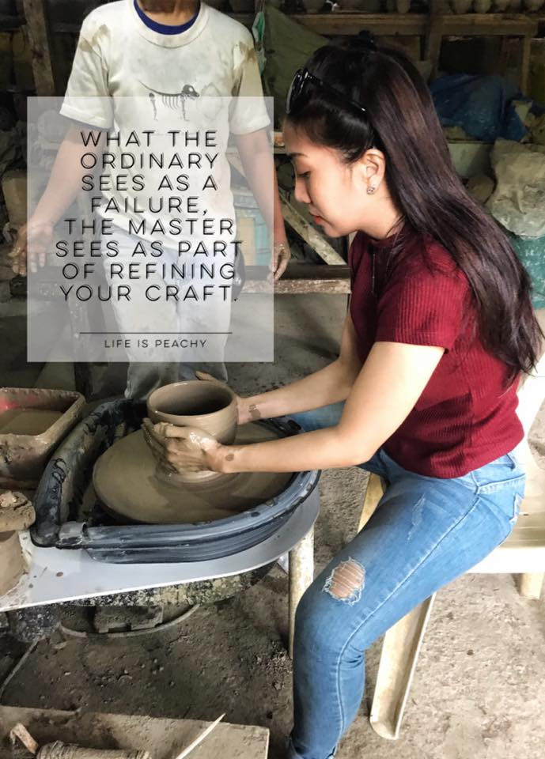
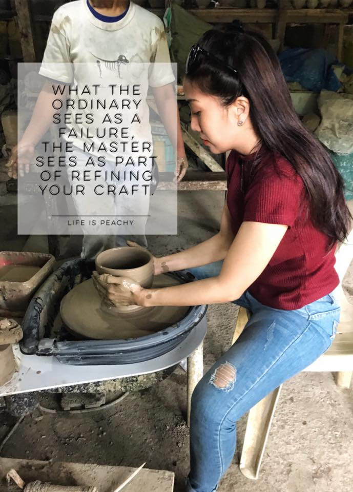

Hi, my name is Peachy!

My passion is to create, write, and empower.
A Young heart, old soul.
HERE ARE A FEW THINGS ABOUT ME:
- I love having coffee over meaningful conversation, and if you haven't I recommend you check out Cafe Mak right by Shatto Place.
The ambiance there is really good, I'm sure you'll love it!


- I love to create. Pottery and ,polymer clay are my favorite mediums. Mostly self-taught crafter using polymer clays but took my pottery lessons in Sagada, Philippines.
- I've been to several countries but my most favorite and wouldn't mind living in would be the country Taiwan. If you go visit Taiwan make sure to explore their street foods in Night Markets. Definitely for the win!

 
